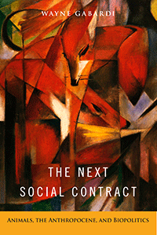

<HTML><head>
<meta name='robots' content='noindex,nofollow' /><script> (function(i,s,o,g,r,a,m){i['GoogleAnalyticsObject']=r;i[r]=i[r]||function(){  (i[r].q=i[r].q||[]).push(arguments)},i[r].l=1*new Date();a=s.createElement(o),  m=s.getElementsByTagName(o)[0];a.async=1;a.src=g;m.parentNode.insertBefore(a,m)   })(window,document,'script','//www.google-analytics.com/analytics.js','ga');   ga('create', 'UA-43183130-1', 'temple.edu');   ga('send', 'pageview'); </script><title>Wayne Gabardi: The Next Social Contract - Print</TITLE><link rel="stylesheet" href="../general.css" type="text/css"><SCRIPT LANGUAGE = JAVASCRIPT></SCRIPT></HEAD><BODY LINK="#3152A5" VLINK="#3152A5" ALINK=Gray BGCOLOR=White><CENTER><P CLASS=intro><br>A comprehensive, interdisciplinary analysis of the fate of animals in the twenty-first century Anthropocene era<br><br></P></CENTER><br>&nbsp;<!--none//--><Table width="100%" border=0 cellspacing=5><tr><td width="175" align="center"></td><td><h1 class = "booktitle">The Next Social Contract</h1> <h1 class = "subtitle">Animals, the Anthropocene, and Biopolitics</h1><h3 class="author">Wayne Gabardi </h3><p class="info">paper EAN: 978-1-4399-1412-0 (ISBN:1-4399-1412-5)</br>$34.95, Jun 17, <font color=#990033>Available</font><br><p class="info">cloth EAN:  978-1-4399-1411-3 (ISBN:1-4399-1411-7)</br>$89.50, <font color=#990033>Available</font><br><p class="info">Electronic Book EAN: 978-1-4399-1413-7 (ISBN:1-4399-1413-3)</br>$34.95, <font color=#990033>Available</font><br><p class="info">242 pp, 6 x 9 </p></td></tr></table></P></td></tr></table><BR><BLOCKQUOTE><p>"<i>We are living in an epoch called 'The Age of Humanity.' I prefer to call it 'The Rage of Inhumanity,' and Wayne&nbsp;Gabardi&nbsp;provides numerous good reasons for this re-envisioning of the Anthropocene. In his wide-ranging, interdisciplinary, and forward-looking book, Gabardi&nbsp;considers the fate of nonhuman animals in the twenty-first century, who are wantonly used and abused by the billions daily and globally by humans in all sorts of venues. He convincingly argues for a new ethic&#8212;a new social contract&#8212;in which nonhumans and humans compete on more even terrain, where the interests of nonhumans are not routinely and thoughtlessly trumped, often brutally, in favor of the interests of humans. I only hope that this cultural shift is not too far off, because we simply cannot continue subjecting other animals to unfettered violence 'in the name of humans.'&nbsp;</i>The Next Social Contract<i>&nbsp;is a provocative book that deserves a broad and global audience.</i>"<br />&#8212;<b>Marc Bekoff,</b> author of&nbsp;<i>Rewilding Our Hearts: Building Pathways of Compassion and Coexistence&nbsp;</i>and<i>&nbsp;</i>co-author of <i>The Animals' Agenda: Freedom, Compassion, and Coexistence in the Human Age</i><br></BLOCKQUOTE><P><P><p>In his provocative book <i>The Next Social Contract, </i>Wayne Gabardi rigorously considers the fate of animals in the twenty-first century. He claims that if we are to address the challenges raised by the Anthropocene&#8212;the period where nonhuman beings tend to be mere extras, often subsumed under the umbrella notion of "nature"&#8212;we need to radically rethink our basic ethical outlook and develop a new, "more-than-human" social contract.<br><p>Gabardi's wide-ranging and multidisciplinary analysis focuses on four principal battlegrounds of animal biopolitics in the twenty first century: the extinction of wild animals, the crisis of oceanic animals, industrialized farm animals and the future of industrial agribusiness, and the situation of contact-zone animals moving into human-occupied habitats. <br><p>In his recasting of the social contract, Gabardi envisions a culture shift in human-animal relations toward posthumanism that features the ethical and political prioritization of animal life so it is on par with that of human well-being.<br><P CLASS="top"><A HREF="#top">BACK TO TOP</A></P></p><P></p><P CLASS="top"><A HREF="#top">BACK TO TOP</A></P></p><P><h2  class="inpageheading"><A NAME="excerpt"></a>Excerpt</h2><p><A HREF="http://www.temple.edu/tempress/chapters_2400/2425_ch1.pdf">Read Chapter 1 (pdf). </A><p><br><P CLASS="top"><A HREF="#top">BACK TO TOP</A></P></P><p><h2  class="inpageheading"><A NAME="reviews"></a>Reviews</h2><p><i>"Wayne&nbsp;Gabardi&nbsp;seeks to expand the scope of animal studies to include a wide variety of problems that are often overlooked. Among the chief merits of</i> The Next Social Contract<i> are Gabardi's wise focus on a broad range of human-animal relationships and his efforts to ground ethics in a rich, coevolutionary context.&nbsp;To build his argument, Gabardi&nbsp;marshals an impressive number of thinkers, texts, and traditions&#8212;from biology and ecology to analytic and continental philosophy. This synthetic approach represents the very best kind of work in the interdisciplinary field of animal studies. </i>The Next Social Contract<i> makes an essential contribution to the discipline."<br /></i>&#8212;<b>Matthew Calarco</b>, Professor at California State University, Fullerton, and author of <i>Thinking Through Animals: Identity, Difference, Indistinction</i><br><P CLASS="top"><A HREF="#top">BACK TO TOP</A></P></b></p><BR><p></p></P><BR>&nbsp;<p><p><h2 class="inpageheading"><A NAME="contents"></a>Contents</h2><P><span style="font-family: 'Verdana';font-size: 13px;" >Introduction &bull; The Argument and Structure of the Book<br/>1. The Anthropocene Hypothesis<br/>2. The Plight of Animals in the Twenty-First Century<br/>3. Posthumanist Ethics<br/>4. The Next Social Contract<br/>Conclusion &bull; Animals, the Anthropocene, and Biopolitics: A Labor of Sisyphus<br/><br/>Notes<br/>Bibliography<br/>Index</span></P><P CLASS="top"><A HREF="#top">BACK TO TOP</A></P></p><P><H2  class="inpageheading"><A NAME="author bio"></a>About the Author(s)</H2><p><b>Wayne Gabardi </b>is Professor of Political Theory and Honors Program Faculty at Idaho State University. He is the author of <i>Negotiating Postmodernism</i>.<br><P CLASS="top"><A HREF="#top">BACK TO TOP</A></P></P><p><h2 class="inpageheading"><a name="subjects"></a>Subject Categories</h2> <p><a href="http://www.temple.edu/tempress/animal_soc.html" target="_top">Animals and Society</a> <br><a href="http://www.temple.edu/tempress/philosophy.html" target="_top">Philosophy and Ethics</a> <br><a href="http://www.temple.edu/tempress/nature.html" target="_top">Nature and the Environment</a> <br><a href="" target="_top"></a> <br><a href="" target="_top"></a> </p></p><P></P><P>&nbsp;</P><font face="Arial" size="1"><a href="copyright.html" OnMouseOver="window.status='Web Copyright Policy';return true;" OnMouseOut="window.status=''" TITLE="Web Copyright Policy">&copy;</a> 2017 <a href="http://www.temple.edu" target="new" OnMouseOver="window.status='Link to Temple University home page';return true;" OnMouseOut="window.status=''" TITLE="Link to Temple University home page">Temple University</a>. All Rights Reserved. This page: <a href="http://www.temple.edu/tempress/titles/2425_reg.html"OnMouseOver="window.status='Link to the book page';return true;" OnMouseOut="window.status=''" TITLE="Link to the book page">http://www.temple.edu/tempress/titles/2425_reg.html.</a></font></BODY></HTML>                    
